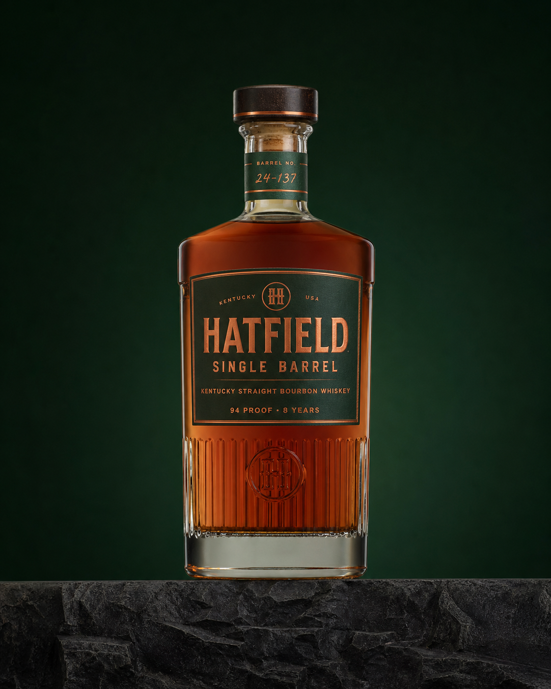
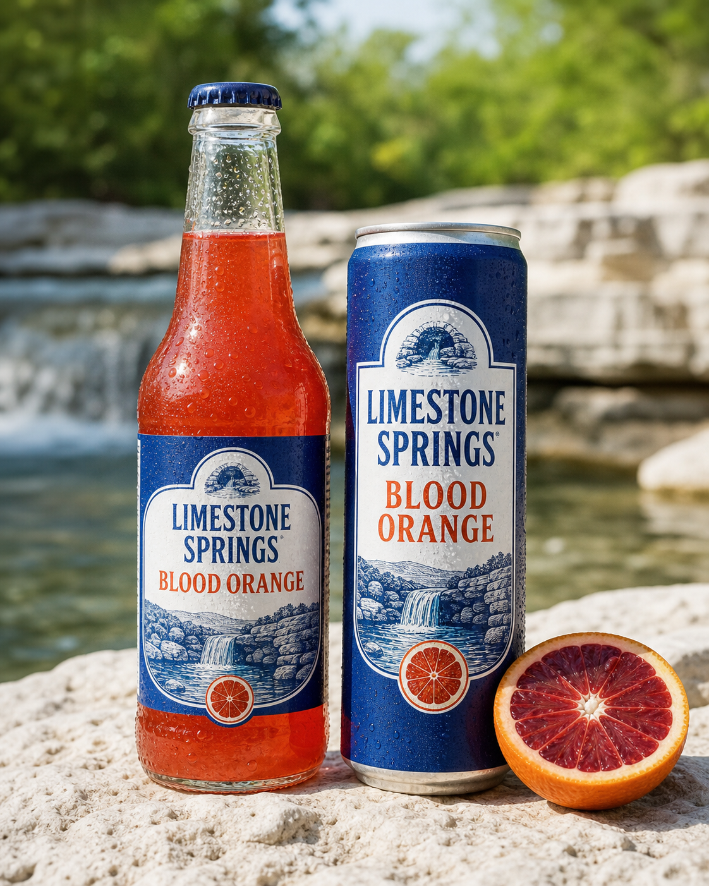

Bardstown, Kentucky · Since 1952Bourbon is
Bourbon is
the beginning.
Hatfield is a drinks and hospitality group built from production knowledge, patient inventory and places people actually want to use.

One group · distinct disciplines
Whiskey gives Hatfield its centre. It does not give every business the same costume.
The Scotland team makes Scottish liquid. The wine team makes wine. Restaurants serve food that belongs in their cities. Shared standards hold the portfolio together.

The whiskey
Single Barrel
94 proof · 8 years · individual barrel character
See the expression →
The places
Built to be used.
From an accessible grill to a private listening room.
Explore hospitality →Within Hatfield Group
Limestone Springs
Premium waters, mixers and sodas built in Frankfort—and available far beyond Hatfield’s own bars.
Visit Limestone Springs